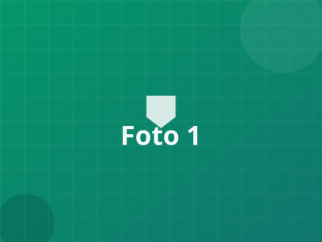
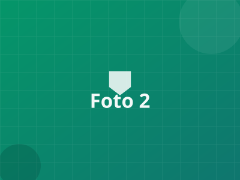
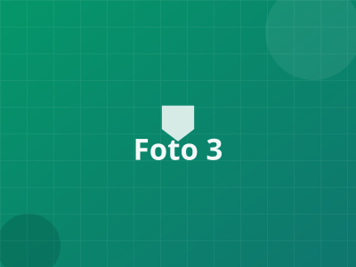
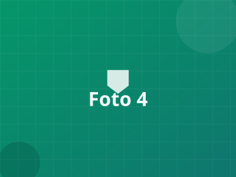

Selamat Datang, Andi
Ringkasan aktivitas proyek lapangan Anda hari ini.
0
Proyek Aktif
12%
0
Anggota Tim
4%
0
Dokumentasi Foto
2%
0
Proyek Selesai
1
Ringkasan Progress
Pemasukan
Pengeluaran
Aktivitas Terbaru
- Foto baru diunggah5 menit lalu
- Laporan mingguan siap1 jam lalu
- Rapat progres besok3 jam lalu
- Kartu tugas dipindahKemarin
Kanban Tugas
Antrian2
Dikerjakan2
Selesai1
Alternatif keyboard: fokus kotak centang kartu lalu Ctrl+Shift+←/→ untuk memindahkan antar kolom.
| Proyek | Lokasi | Tim | Status | Progress |
|---|---|---|---|---|
| Jembatan Desa Sukamaju | Sukamaju | 6 orang | Aktif | |
| Gedung Posyandu | Desa Melati | 4 orang | Ditunda | |
| Saluran Irigasi | Kec. Sari | 8 orang | Selesai | |
| Gedung Serbaguna | Desa Karya | 5 orang | Aktif |
Dokumentasi Foto

Pondasi — 12 Agu

Dinding — 19 Agu

Atap — 26 Agu

Finishing — 02 Sep